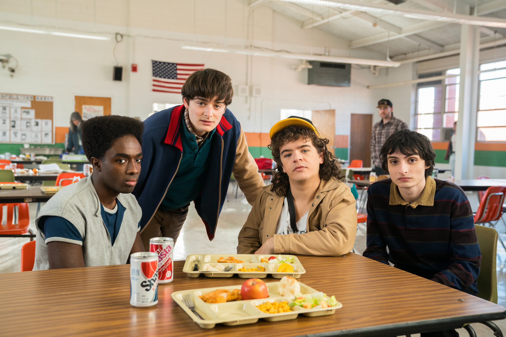

O que é o mundo invertido?
O Mundo Invertido parece uma cópia do nosso mundo, mas com criaturas horrendas, tempestades assustadoras, muita escuridão e entidades malignas. Um reino controlado por Vecna, que tem planos de trazer tudo isso ao nosso mundo.
.
O Demogorgon é um predador ágil e implacável, com uma mandíbula impressionante e a capacidade de se teletransportar através de portais dimensionais. Além do Demogorgon e do Devorador de Mentes, capaz de controlar mentes e possui uma forma física horripilante, existem outras criaturas que habitam o Mundo Invertido, como os Mind Flayers, que são menores e mais numerosos, e outras formas de vida bizarras que emergem dos portais dimensionais.

O que esperar da última temporada?
A produção da quinta temporada iniciou em 2024, com filmagens planejadas para durar um ano inteiro. A atriz Maya Hawke, que interpreta Robin Buckley desde a terceira temporada, revelou recentemente que podemos esperar episódios extensos, quase como filmes individuais, intensificando o nível de detalhamento da narrativa.
.
O anúncio dos títulos dos oito episódios da temporada já despertou a imaginação dos fãs. Embora Netflix e a equipe de produção mantenham a maioria das informações em sigilo, os títulos são sugestivos e podem oferecer algumas pistas sobre o rumo da narrativa. Termos enigmáticos como “The Crawl”, “Sorcerer” e “Escape from Camazotz” desencadeiam especulações sobre os novos desafios que os protagonistas enfrentarão.
Imagens dos bastidores da 5ª temporada
- 
O Clube Dungeons & Dragons
Para deter Vecna, os heróis de Stranger Things também precisam de você. O Clube de D&D mais famoso de Hawkings está com vagas abertas para sua próxima aventura. Se você é destemido, gosta de desafios e não tem medo de rodar o D20, chegou a hora de se inscrever para fazer parte da nova campanha.